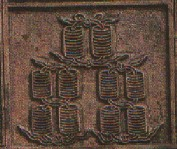

歴史 13・数牌の図柄
と
は何故あの形なのでしょうか。他の索子や、筒子はある程度規則的な形だと思うのですが、あの二つだけ変な感じがします。
筒子はサイコロの目を借用した図柄です。麻雀の原型である中国カード時代は穴あき銭そのものの図柄でしたが、骨牌時代になってサイコロ目に変化しました。そしてから
までは、一つのサイコロの目、
以上は二つのサイコロの目の組み合わせです。
すなわちと
の組み合わせ、
の組み合わせです(数が少ない方が上部)。 そこではあのような形となっているのです。
索子は、あの１本１本が穴あき銭を10枚ほどまとめて紐（ひも）に通した形を表しています。そして昔のデザインでは紐より穴あき銭の形が強調されていたのですが、現在は紐（ひも）の部分が強調され、穴あき銭そのものは瘤（こぶ）のような膨らみとして残っているだけです。
ではなぜ
しかしこれは単にデザイン上だけの問題なので、収まりさえ良ければどの様な形でも構わないわけです。そこで昔は、家紋でいえば「八本矢車（鯉のぼりの竿の一番上でクルクル回っている風車。こんなの→＊」のようなデザインの
2001/09/19(Wed)
ある麻雀の掲示板を見ていたらは「３本並んでいるほうが上」という意見がでてました。いつも赤色の１本のほうを上にしていた私は考え込んでしまいました。もし正しい
あさみ 2001/09/20(Thu)
麻雀のルーツである馬吊（マーチャオ）の図柄を見ると分かりやすいのですが、もともと索子は穴あき銭10枚くらいを積み上げ、その穴にヒモを通して上部でくくった縛った図柄です。そこで昔のデザインを見ると、索子の上下はハッキリしています。
も同様で、１本棒の方が上です。
ぱしり 2001/09/22(Sat)10枚の文銭に紐を通すことは、倭でも漢土でもないです。100枚か1000枚が普通です。コインマニアのオイラが言うのだ。信じてたも。
あさみ 2001/09/22(Sat)
ども、ぱしりさん。
実際はその通りでしょうね。以前に江戸時代の青銭をくくった図を見たことがありますが、たしかに穴あき銭が100枚くらいつなげられ、ぞろりとした帯みたいな感じになっていました。(^-^；
しかし上記で述べた「穴あき銭10枚くらいを積み上げ」と云うのは、あくまで麻雀のルーツである馬吊（マーチャオ）に描かれている図柄の話です。

ご存じのように馬吊はトランプを縦に半割りにしたくらいのサイズ。その面積に銭束の絵を精密に描くのは難しいですし、遊び用のカードですから細かく描く必要もない。そこでその状態がデフォルメして描かれていたのだと思います。
なぜ（一索）は鳥なんですか？ また何の鳥でしょうか？
何か由来があるんでしょうか。
こちらとこちらご覧下さい。(^-^)/
塔四郎 日付：2002/11/10(Sun)
その友人曰く「沈没した潜水艦から引き上げられた」とのことでしたが(笑)
あさみ 日付：2002/11/10(Sun)
こんにちわ、搭四郎さん
もちろん珍しいですね。しかし金銭的な価値は大きく期待しない方がいいと思います。
もしＭＷだけが特徴で、その他はどうってことはないとすれば、本来の価格プラス アルファというくらいのところだと思います。それは牌の価値は総合的な観点から評価されるからです。その評価点を、思いつくままに少し挙げますと
(1)牌身の材質はなにか
(2)牌身の厚みがどれくらいあるか
(3)彫りがどれくらいしっかりしているか、あるいは綺麗か
(4)牌背の材質はなにか
(5)アリ(牌身との接合部分)の状態はどうか
(6)花牌が揃っているか
(7)花牌の模様、文字はなにか
(8)箱があるか
(9)どのような箱か
(10)牌と箱の時代があっているか
(11)その箱には、牌以外の小道具が入っているか
(12)小道具が入っているとすれば、それはなにか
などがあります。
＃細かい事を言い出すと、まだいくらでもありますけどね。
そこでＷＭがＭＷになっているのはもちろん珍しいのですが、それはこれらの評価にプラスされる要素くらいのことです。
とは云うものの、魚１索ともなればたった１枚のことでものすごい価値があります。ではなぜＭＷの８索が魚１索のような価値がないかというと、それは単に彫り師が彫り間違いをしたというだけのことで、魚１索のような歴史的背景や文化の継承が無いからです。
しかし単なる間違い彫りでも、「萬」の字を、全部「満」に間違えたような牌があれば、めっちゃ価値があることになります（どこかに落ちとらんかいな(笑) ）
匿名希望 日付：2002/11/10(Sun) 12:52いっそのことご自分で作られて、「これぞお宝」と鑑定してしまったらどうでしょう（笑）。
あさみ 日付：2002/11/10(Sun)それもいいけど、現在ではどんなに奇抜なデザインでもレーザーで出来てしまうので、デザイン奇抜＝お宝にはならないですね(-_-； 魚１索牌をレーザーで彫るのも手ですが、古そうな牌に彫らないとダメ(笑) あとは古い収納箱を用意すれば完璧か(^-^；
＃このカキコを見て、「よしっ、１丁」と思った人に。
魚索子を模造するなら、他の数牌の彫りも時代を合わせること。(^-^；
北支風の魚索子に南支風の筒子がセットになっていたら、ぶちこわしだよ。(笑）
ねことチクワの会 投稿日：2010/04/08(Thu)
あさみ先生、こんばんわ＆久しぶりです。
最近古い骨牌を手に入れたので、愚問にお答え頂ければ幸いに思います。
牌を見て思ったのですが、あの独特な彩色は麻雀の誕生当初のものなのでしょうか？
マンズの赤と黒・ピンズの赤と青（濃紺）・ソーズの緑と赤など（例外は別として）何らかの理由があってのことならば、なぜそのような配色にしたのか？
また七索に至っては真ん中の棒下二本の彩色が青だったり、ピンズの◎（丸い図柄）が内外二色の彩色だったり興味の尽きないところであります。
もうひとつ、以前こちらのコラムを見ての質問ですが、華中（華北）または華南では、それぞれ牌の図案が違っているということ（模様の違いでどこで制作されたかが判別できる）ですが、具体的にはどのような違いなのでしょうか？
マンズの万の字（萬と万）・ピンズの◎（同心円と梅模様）、ソーズの竹の図案と笹の葉の図案などの違いと予想がつくのですが、そのルーツというか由来を知りたいのです。
ちなみに私の骨牌は
・マンズが（万）の字
・ピンズは同心円（◎）状の図柄
・ソーズは笹の葉の図案
・一索はシンプルな感じの下向きのツバメ
・字牌は東南西北中發白
・華牌は春夏秋冬の四枚のみ+予備の白牌四枚
・竹ケース入り骨製サイコロ3つ
・東南西北の小片が入った、骨をくりぬいたと思われる
・起家マークのようなもの（使い方がよくわからない）
・平らな骨の点棒（現在よく見るものと大分違っている）合計１１４本
・引出し五段の唐木の箱
調べる限りでは価値は高くないみたい・・・
あさみ 投稿日：2010/04/11(Sun)こんにちわ、ねことチクワの会さん>あの独特な彩色は麻雀の誕生当初のものなのでしょうか？
そうですね、古い牌でも同じような彩色がされてます。そこで麻雀牌が骨牌化した当初から、あのような彩色であったと思われます。ただ彩色の理由はハッキリしているものもありますし、よく分からないものもあります。ひとつ超ハッキリしている例として、
>華中（華北）または華南では、それぞれ牌の図案が違っているということ
製作された地域や時代によって はっきりした特徴がある場合もありますし、かすかな特徴であることもあります。しかしその違いを具体的に述べるということになると、ちと大変です。(^-^； また図柄のルーツとか由来ということになると、これも理由がハッキリしているものもありますし、よく分からないものもあります。(_ _；
>ちなみに私の骨牌は
いわゆる華中（上海中心）で多くつくられた牌と思います。コメントを拝見すると、５段の箱入りで花牌はもとより 各種小道具もそろっているとか。となれば完品なわけですから、資料的や骨董的に貴重牌とはいえないとしても 良品の古牌セットと思います。(^-^)v
ねことチクワの会 投稿日：2010/04/11(Sun)
ありがとうございました。
牌の模様一つ眺めるだけでも、奥の深い遊戯だとつくづく思います。
> いわゆる華中（上海中心）で多くつくられた牌と思います。
製造時期が戦前か戦後かは本文の説明だけで判別可能でしょうか？
実のところ、それだけでもハッキリすれば良しと思っていました。
> 良品の古牌セットと思います。(^-^)V
お褒めに預かり恐縮です。
ただひとつ気になるのが、牌の骨身の厚さが3mm程度しかないということです。
当然その分竹身の方が厚くなっている訳で。そこで実用品というよりも、観賞用（または土産物）の牌ではないかと考えることもあります。
あさみ 投稿日：2010/04/11(Sun)
> 製造時期が戦前か戦後か
太平洋戦争の前か後かという意味なら、明白に「前」です（たぶん1920年代後半くらい）。
> 牌の骨身の厚さが3mm程度しかないということです。
牛骨部分は厚いに超したことはありませんが、当時の牌で それくらいの厚みのモノはよくあります。
それよりも、完品セットということの方が大事と思いますよ。
> だから、実用品というよりも、
あきらかに当時の実用品です。
ねことチクワの会 投稿日：2010/04/12(Mon)
何度も質問にお答え頂きありがとうございました。
後世に伝えるべく大切にしようと思います。
ryu 投稿日：2010/04/13(Tue)
こんにちは。
牌の彩色の話で気になったのですが、筒子は赤と紺の２色の他に、緑も加えた３色のデザインもあるようですね。２色だとシンプルですが、３色になるとかなりカラフルな感じがします。ただ、日本で３色の牌を見たことはありません。
この彩色の差は地域によるものなのでしょうか？ あるいは正式には３色の時代もあったけれど、そのうち手間で２色に落ち着いていった、などでしょうか？
「珍奇牌」のコーナーでもあまり筒子については触れられてなかったので、せっかくなので質問させていただきました。
あさみ 投稿日：2010/04/13(Tue)
こんにちわ、ryuさん
一言で云ってしまえば、ピンヅの色合いは単なる地域差、あるいは時代差ということになると思います。
麻雀のピンズのデザインは、サイコロのデザインと彩色を転用したものです。そしてサイコロの彩色ということになれば、赤と黒しかありません。そこで敢えて正式な色と云えば、赤と黒のみということになります。そのうち黒が時代とともに紺色ベースになったり緑が加わったりして現在に至っているという感じです。
※ピンヅの１から５まではサイコロの１面の図柄をそのまま写したもの。
６は４と２の合体形，以下 ７は４と３，８は４と４，９は３が三つの合体形。
蛇足
ピンズがサイコロのデザインを転用したものであれば、６はサイコロと同じように均等配置なるはずです。それが４と２の合体形となっているのは、麻雀のピンヅはサイコロデザインから直接転用したのではないからです。
麻雀はもともと紙札ゲームでした。それが19世紀後半、骨製のタイルを使う天九牌（てんきゅうハイ）というゲームと合体して骨牌化しました。合体前 麻雀のピンヅの図柄は穴あき銭でしたが、合体したとき穴あき銭デザインではなく天九牌デザインが用いられました。そこで麻雀の６も、天九牌と同様の形となっているのです。
http://www9.plala.or.jp/majan/col23.html
ryu 投稿日：2010/04/14(Wed)
詳しくご回答いただきありがとうございました。
天九牌から来ていると言われると、確かに納得できます。
緑はあくまでも後からデザイン性のために追加されたんでしょうね。
ちょっと実物を見てみたいので、日本でもどこかのメーカーが作ってくれればいいのに、と思いますが。
ところで、筒子が三色だと推不倒に使えるのかという問題も（笑）
（（２３８９）が不可だとかなり難しい役になりますｗ）
あさみ 投稿日：2010/04/15(Thu)
>ところで、筒子が三色だと推不倒に使えるのかという問題も（笑）
σ(-_-)の考えた牌デザインを採用すると、すべての牌が推不倒 に使えます(^-^；http://www9.plala.or.jp/majan/labo23.html